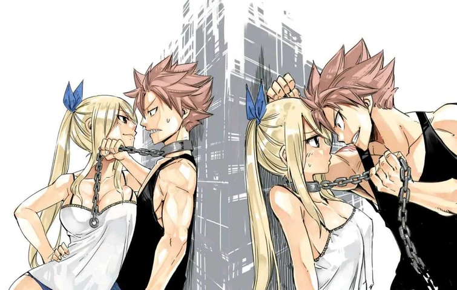

Mira Nash tus apas
Hoy toco un poco de FT por que es otro gran anime en nuestras vidas, se queq te gusta el Navia (creo queq era asi el natsuxjuvia(?) ) pero el Nalu creo a Nashi asi que por ahora nalu
El dia de hoy es un poco peculiar voy a darte los primeros capitulos de lo de Vaett y el pueblo de Einar/Adhara perdon si no lo eh hecho antes la falta de tiempo me consume kajdkjd aun ahora. Pero hare mi esfuerzo para matenerte al tanto, te amo muchisimo, espero que esto te ayude a distraerte un poco de las clases en la uni.
Capitulo 1: El ataque
Era una mañana tranquila, el movimiento de su amada para arreglarse fue lo que lo hizo despertar, al abrir sus ojos vio la espalda desnuda de su amada, con aquellas delicadas curvas, y aquel perfecto corazón formado por sus caderas… se levanto de apoco y empezó a besarle el cuello, entre una sonrisa picara y tono medio dormido susurro al oído.
-¿A dónde vas?... -dijo el muchacho mientras abrazaba por la cintura a su amada- es temprano aun como para empezar la jornada…
Su amada simplemente pudo sonreír, disfrutando el momento antes de contestar.
- Einar quiere hablarme en el templo, me hablo en sueños debe ser algo importante -suspiró mientras exponía un poco mas su cuello y recostaba su espalda en el pecho del otro-
- Ooohw… -dijo en tono de decepción el muchacho- ¿no puedes quedarte unos minutos más? Prometo que no te hare llegar tarde…
Pero su amada Vaett era mas astuta, se safo de los brazos de K’sante con una facilidad picarona, mientras empezaba a vestirse nuevamente, a veces el sentido del deber de su amada la impresionaba, otras veces lo hacían hacer un pequeño berrinche a causa de que la otra no podía pasar mas tiempo a su lado. Ante aquella negativa no le quedo de otra que hacer lo mismo, prepararse para empezar su jornada, no sin antes darle una nalgada a Vaett, lo que causo una pequeña pelea matutina.
Su jornada siempre era la misma, Primero, todas las mañanas iba al templo de su diosa, como oráculo era parte de su trabajo, administrar el templo de su señora era una de sus tareas mas importantes. Luego de eso, se dedicaba a administrar el centro medico de su amado pueblo, no solo era un oráculo excepcional si no que uno de los mejores médicos.
Preparar ungüentos medicinales, reparar fractura de los guerreros que regresaban de una larga jornada en el campo de batalla. Suturar, operar, medicar, atender las alas de las valkyrias… Siempre era lo mismo, aunque últimamente Vaett venia mucho por la ultima parte, lo cual le pareció particularmente extraño.
Todo hubiera sido normal, un día más, una rutina más, pero una gran explosión sacudió los cimientos de su amado pueblo, provocando un vuelco en el corazón de cada habitante, esto definitivamente no era algo cotidiano, no estaba en los planes, y cuando escucho la campana… temió por lo peor. Al salir ala centro medico para ver si había heridos los escucho, escucho a los demonios que, por tanto tiempo habían encerrado, gritando luchando…tocando los tambores, esos tambores se quedarían grabados en su mente por un largo, largo tiempo.
Cuando los tambores de guerra empezaron a resonar por la cordillera de montañas que formaban los pueblos a los dioses del cielo y la estrategia. K'sante salió disparado hacia el templo, cuando había escuchado la explosión del sello que contenía a los demonios Eramthgin, sabia que tenía que hacer. Lo único malo, era que el miedo le oprimía el pecho, como si una piedra enorme hubiera decidido descansar sobre esté. Después de todo hace una hora que su amada había bajado a revisar el sello, luego de su revisión rutinaria...ella podía sola contra súbditos de los Eramthgin pero no sabía si podía enfrentarse a una amenaza tan grande ella sola, como la que coreaban los demonios recién liberados.
- ¡Dra-e-kus! ¡Dra-e-kus! ¡Dra-e-kus! -Gritaban los demonios, con un tono que parecía que se les iba a rasgar la garganta, era un cantico aterrador-
Habían llevado a su mejor ficha hasta la salida de su cárcel centenaria. K'sante había perdido el equilibrio, el miedo escalo a pánico, pánico por la posibilidad de perder a aquello que más amaba. Estuvo en el suelo unos minutos… la sangre escurría por su boca. Se había mordido a su propia mejilla para salir de aquel estado, lo había hecho inconsciente recordando lo primero que les enseñaban a los guerreros de su pueblo: el miedo no es una opción. Se levantó rápidamente y pateó la puerta del altar de la diosa Adhara no había tiempo que perder, Vaett necesitaba ayuda, y aunque el no fuera mejor en cuestiones de combate, sabía que su diosa atendería su llamado, sus dioses podrían salvarlos y ayudar a su amada. Poco sabia el joven sacerdote lo que le esperaba.
Los Eramthgin eran astutos, eran demonios después de todo, jugar sucio se les daba bien. Cuando entro al templo se horrorizo al ver como la magia pagana de sus enemigos había afectado a su templo tan rápidamente, distorsionando el propio poder de aquel lugar sagrado, lo cual…no era nada bueno, ya de por si aquel hechizo había deteriorado el espacio, fragmentando el terreno. Pilares del tembló floraban libremente de cabeza, alguna de las estatuas estaba de lado… incluso la gravedad parecía haberse visto afectada. Y en cuanto al poder del tiempo que residía en el templo…algunas estatuas se hacían polvo y nuevamente regresaban a su forma original, podía verse a si mismo caer al vacío o saltar por ahí. Al parecer las infinitas posibilidades del flujo del tiempo estaban chocando entre si en ese mismo lugar.
Le costó ver donde estaba el altar. Era el único lugar que no había cambiado en su espacio de treinta metros cuadrados estaba algo lejos, pero podía llegar hasta ahí por un camino algo…extravagante, además todas sus versiones estaban intentado ir al mismo lugar. Así que respiro profundamente y se empezó a dirigirse hacia el altar de su diosa divina. Tuvo que hacer un salto algo arriesgado a una pequeña isla de dos metros cuadrados que flotaba de izquierda a derecha para llega al siguiente tramo. No quería mirar hacia abajo… pero lamentablemente lo hizo, no sabía si por instinto por estupidez, pero cuando vio que solo le esperaba una caída infinita se decidió que había sido por la segunda. Lo que estaba ahí abajo… no tenia descripción, era como si un vórtice de magia viva estuviera esperando que algo cayera a sus fauces, le recordó a una historia que contaban los marineros sobre un monstruo gigante que devoraba barcos creando un tornado de agua y sal, se había ganado el nombre de caribdis, lo había escuchado desde pequeño, lo que había sido suficiente para que empezar a tenerle cierto miedo al mar.
Dio un trago de salvia enorme mientras veía como se acercaba a su destino… y salto, lamentablemente el mareo fue repentino debido al cambio de perspectiva gravitatoria. Su idea era tomar una saliente e ir poco a poco hacia otra isla, pero al saltar la pared totalmente vertical se había convertido en un piso, lo que lo había confundido bastante.
- Seguro que al oráculo de Cassandra le gustaría estudiar este tipo de magia… -murmuro el joven mientras se acariciaba la mejilla mientras intentaba no vomitar, pues había caído de cara y todo el cambio lo había mareado bastante- bueno sigamos… -dijo mientras retomaba el rumbo-
Fue navegando poco a poco por todo aquel lugar corrompido, sufriendo mareos y pequeños golpes en la cabeza por los cambios de posición tan abruptos, pero por fin lo había conseguido. Había podido llegar al altar, en parte había sido gracias a las líneas que estaban chocando, ver a copias de el de posibles decisiones le había ayudado a guiarse a no cometer dichos errores, lamentablemente había vistos a varios morir al caer al vacío…pero al menos no era su línea temporal.Por suerte no había nada…ni nadie por ahora, aun así, invoco su cetro y con un golpe en el suelo hizo sonar la campana, el altar respondió a la magia de su oráculo, emitiendo un pulso de magia que rompió el conjuro de los Eramthing. K’sante sonrió, su señora era increíblemente poderosa.
- Bien es hora de rezar… espero que mi señora pueda escucharlo… -volvió a golpear su báculo con el suelo, la puerta detrás de él empezó a cerrarse mientras un escudo de magia envolvía el lugar-
K’sante se arrodillo ante el altar y empezó a recitar la más elaborada de las oraciones que había hecho hasta ahora, Adhara sabia que su oráculo no era tan bueno para la poesía, así que esperaba que ese pequeño detalle llamara la atención de la diosa.
Oracion de las estrellas
Oh, Adhara, la más brillante de las estrellas en la constelación de Canis Major, tu presencia nos inspira a seguir adelante en la lucha contra la oscuridad que se cierne sobre nosotros. Tus constelaciones nos guían a través de la oscuridad, como un faro que ilumina el camino hacia la victoria.
Como tu Oráculo, sé que tu poder es inmenso y que tu luz es inigualable. Al igual que la constelación de Orión, tus guerreros están dispuestos a luchar por la victoria, pero necesitan tu ayuda para prevalecer. Tu magia es tan poderosa como la estrella Betelgeuse, cuyo brillo rojo nos recuerda que incluso en la oscuridad más profunda, siempre hay esperanza.
Te ruego que nos ayudes en nuestra lucha contra la invasión que enfrentamos. Que tu luz y tu poder nos protejan y nos guíen hacia la victoria. Que tus constelaciones nos den la sabiduría necesaria para superar los obstáculos que se interponen en nuestro camino. Que tu magia nos otorgue la fuerza para resistir y vencer a nuestros enemigos.
Oh, Adhara, diosa de las estrellas y las constelaciones, hija del dios del tiempo y la diosa de la magia, te imploro que nos ayudes en nuestra hora de necesidad. Como la estrella del norte, eres nuestra guía en la oscuridad y nuestra brújula en la lucha contra la invasión que enfrentamos. Te imploro que escuches mi plegaria y que nos ayudes en esta hora de necesidad. Que tu luz nos guíe hacia la victoria, y que tu magia nos proteja de todo mal. En tu nombre, te lo ruego.
Mientras K'sante hacia su oracion... Uno de los jefes de los ejercitos eramtngis habia entrado al templo portando llamativos guanteletes de oro. Poco sabia el joven oraculo de la pelea que estaba apunto de enfrentar